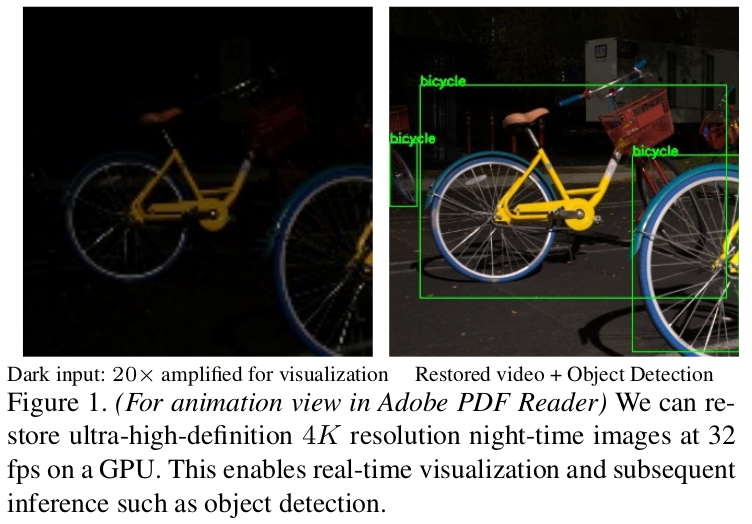

Restoring Extremely Dark Images in Real Time
Mohit Lamba and Kaushik Mitra. "Restoring Extremely Dark Images in Real Time", CVPR, 2021

Fast and Efficient Restoration of Extremely Dark Light Fields
Mohit Lamba and Kaushik Mitra. "Fast and Efficient Restoration of Extremely Dark Light Fields", WACV, 2022

Low-Light Light Field Imaging
Mohit Lamba, Kranthi Kumar Rachavarapu, Kaushik Mitra. "Harnessing Multi-View Perspective of Light Fields for Low-Light Imaging", IEEE Transactions on Image Processing, 2021

Low-Light Light Field Imaging
Mohit Lamba, Atul Balaji, Kaushik Mitra. "Towards Fast and Light-Weight Restoration of Dark Images", BMVC, 2020

Digital forensics that scales well to images of varying sizes
Mohit Lamba, Kaushik Mitra. "Multi-patch Aggregation Models for Resampling Detection", ICASSP, 2020
Detecting software edited Photo-Realistic images from genuine camera images.
Prakhar Pradhan, Vinay Verma, Sharad Joshi, Mohit Lamba, Nitin Khanna "Residual Domain-Rich Models and their Application in Distinguishing Photo-Realistic and Photographic Images", Taylor and Francis, 2019